Primer AgroNegocio
Aguacate Hass Orgánico
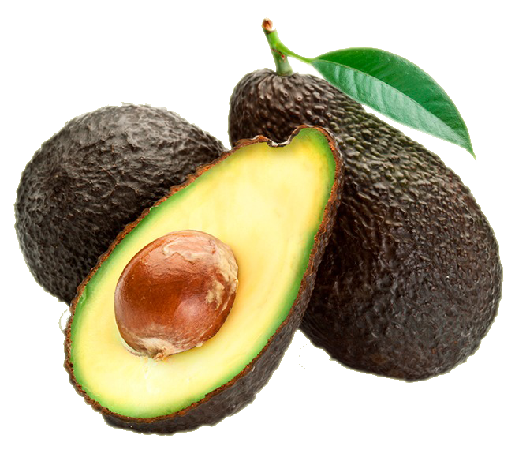
En 2020, se instalo en 100,000 mt2 una plantación de Aguacate Hass con prácticas orgánicas, donde se
estima
producir 50,000 kg anuales con calidad exportación durante los proximos 45 años.
Estado de México

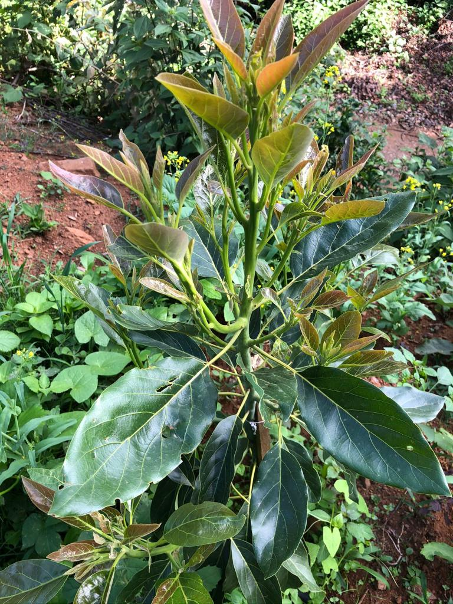
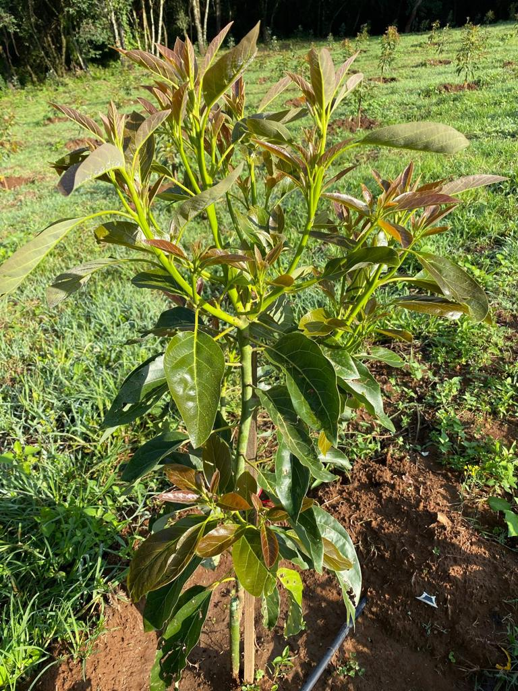

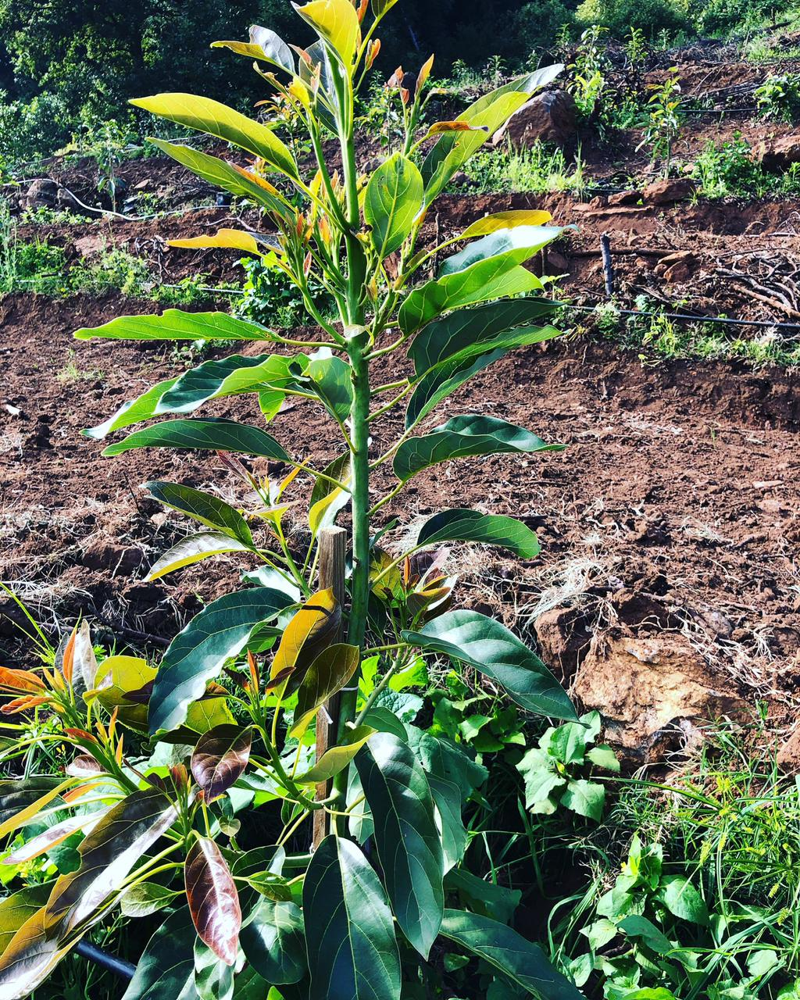
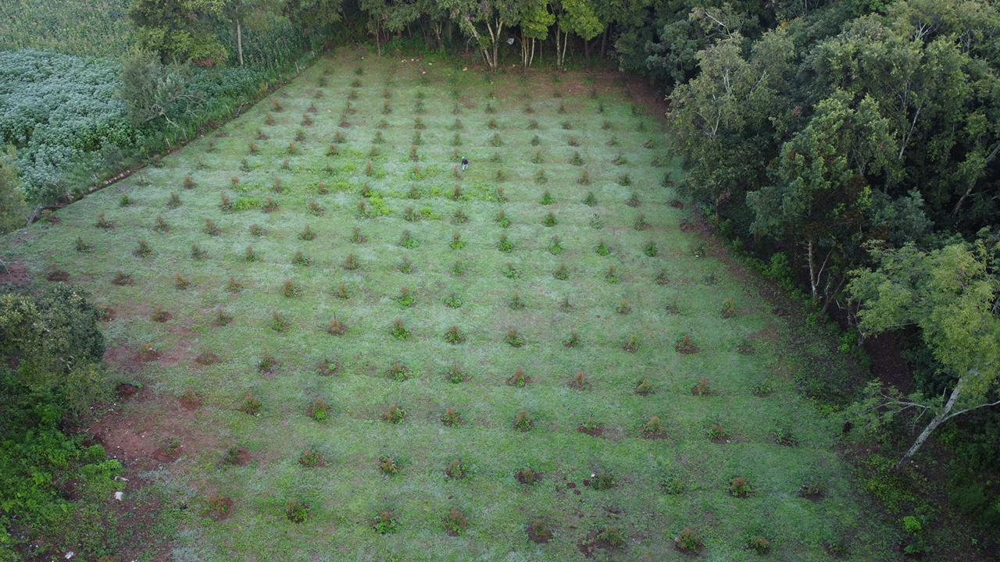
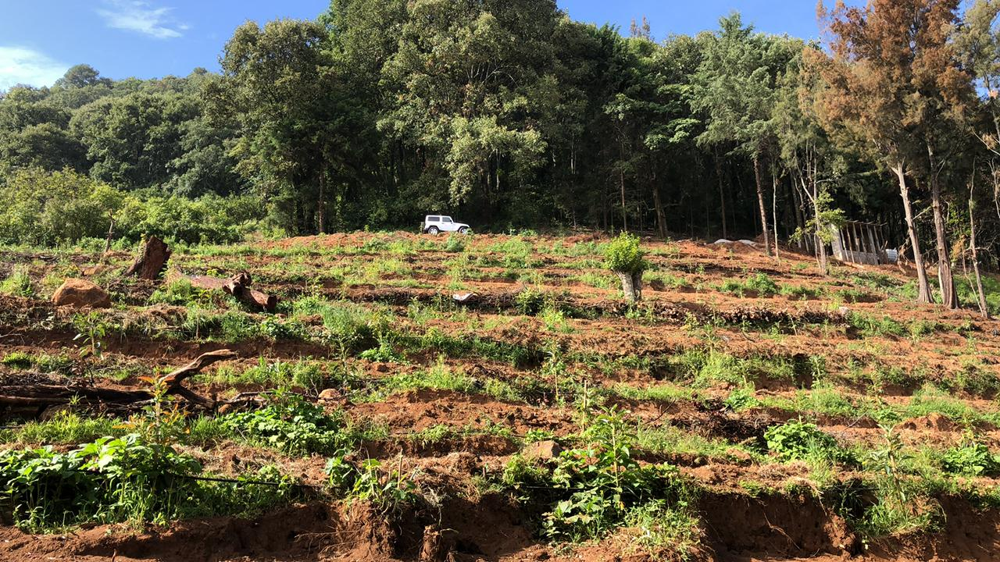
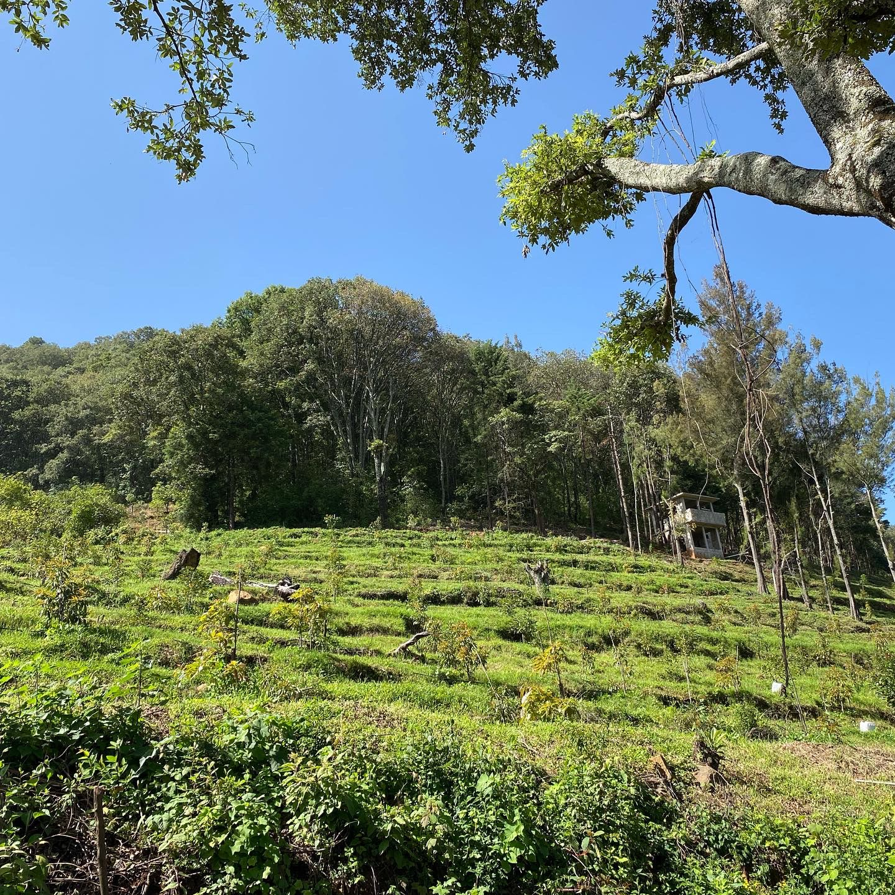
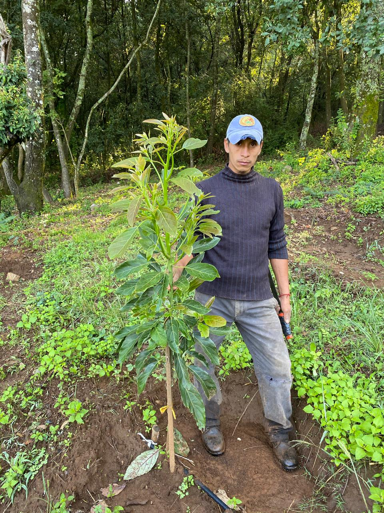
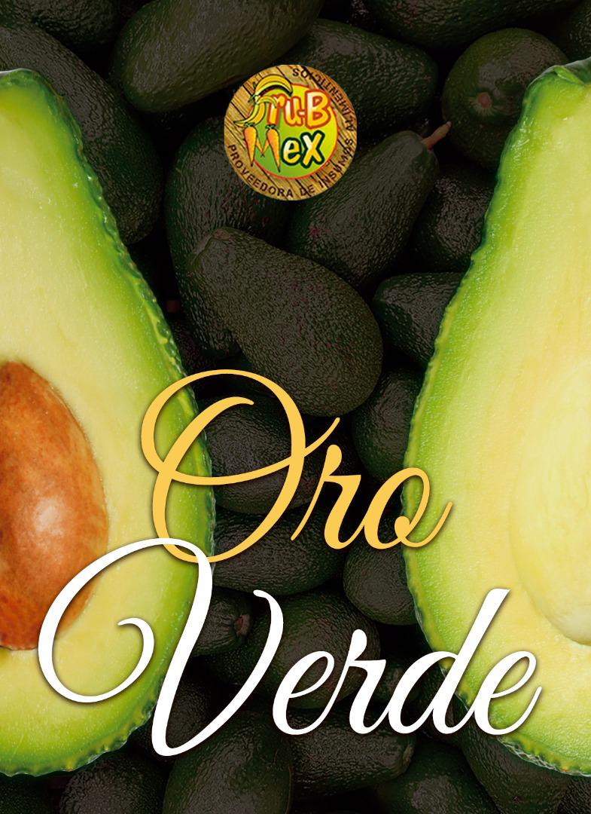
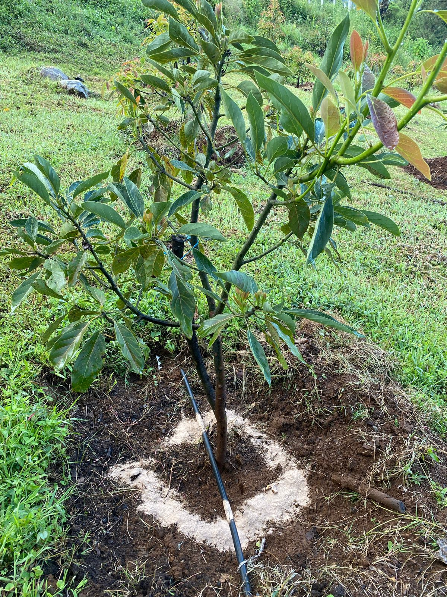
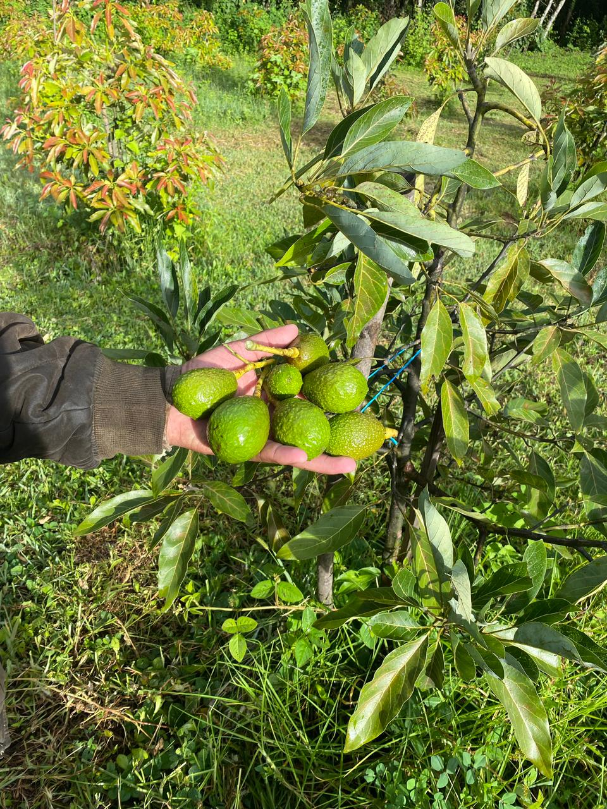